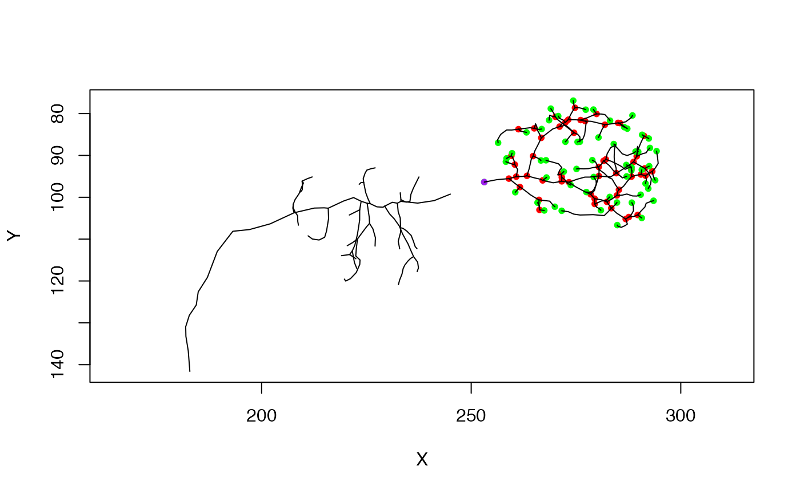

R/neuron.R
stitch_neurons_mst.RdStitch multiple fragments into single neuron using minimum spanning tree
stitch_neurons_mst(x, threshold = Inf, k = 10L)
| x | Fragments that could be a |
|---|---|
| threshold | The threshold distance above which new vertices will not be
connected (default= |
| k | The number of nearest neighbours to consider when trying to merge different clusters. |
A single neuron object containing all input fragments.
The neurons are joined using the minimum spanning tree i.e. the tree that minimises the sum of edge weights (here, the Euclidean distance). The neuron is rooted in the largest cluster; if this cluster contained the original root of the neuron, then this should be retained.
Note that when a threshold length is used, it must be specified in the same units (microns, nm etc) as the neuron being stitched.
If you wish to process a neuronlist containing multiple neurons each of
which must have all their subtrees stitched then you must use
nlapply to process the list iteratively.
simplify_neuron, spine,
ngraph, igraph::mst
Sridhar Jagannathan j.sridharrajan@gmail.com
n=Cell07PNs[['ECA34L']] # find the tree with the 10 most important branches n_main=simplify_neuron(n, n = 10) # and the complement n_branches=simplify_neuron(n, n = 10, invert = TRUE) # plot the inputs plot(n_main, col='red', WithNodes=FALSE)# join the two fragments back together again # first make a neuronlist containing the two fragments nl=neuronlist(n_main, n_branches) # and stitch those n_stitched=stitch_neurons_mst(nl) if (FALSE) { # look at the neurons in 3D - they appear identical in this case plot3d(n, alpha=.5, col='cyan', WithNodes=FALSE) plot3d(n_stitched, alpha=.5, col='red', WithNodes=FALSE) } ## second example neuron containing multiple sub trees n=Cell07PNs[['ECA34L']] # remove a single vertex, breaking the neuron in two # note that the root (purple node) has moved np=prune_vertices(n, 105) plot(np)# now stitch the broken neuron back together again nph=stitch_neurons_mst(np) # note that the root remains the same as the input neuron (np) plot(nph)